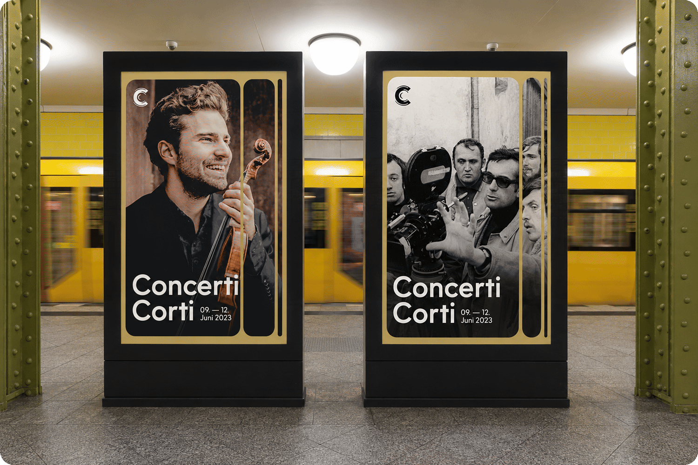
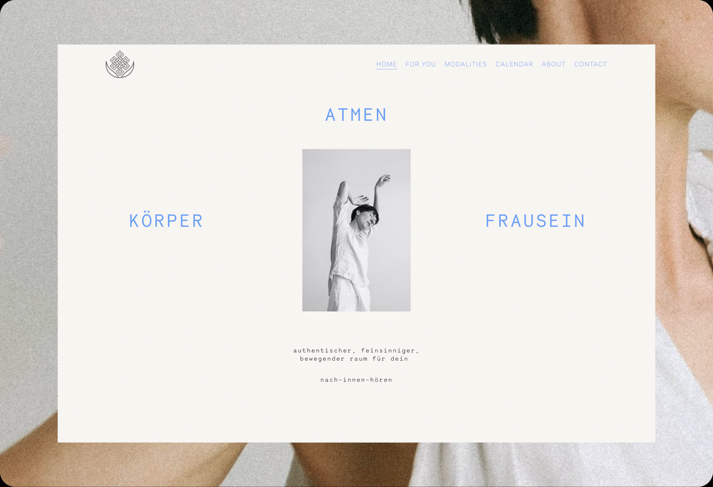
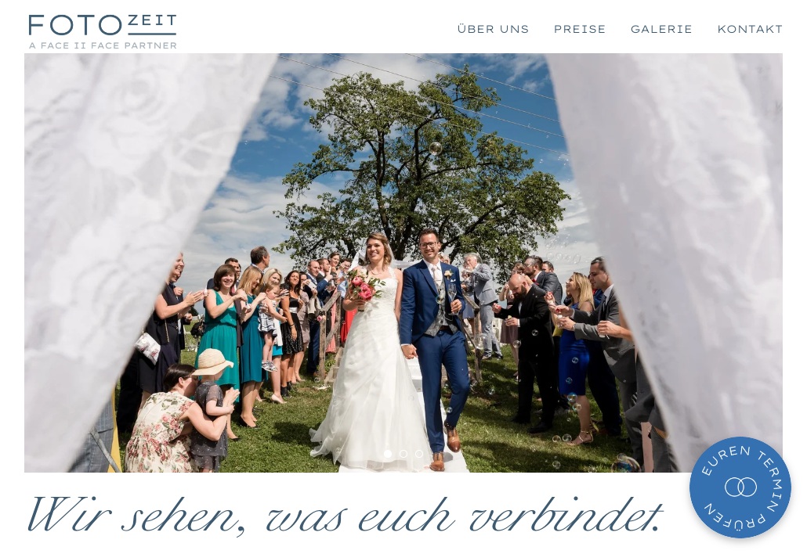
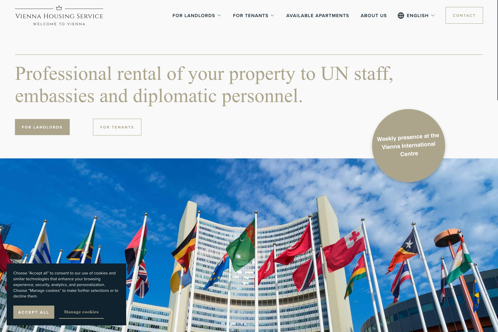
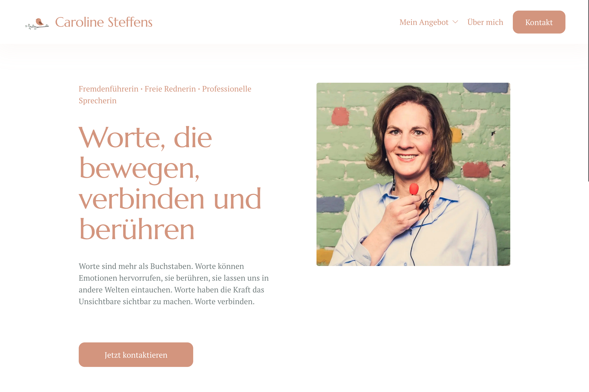
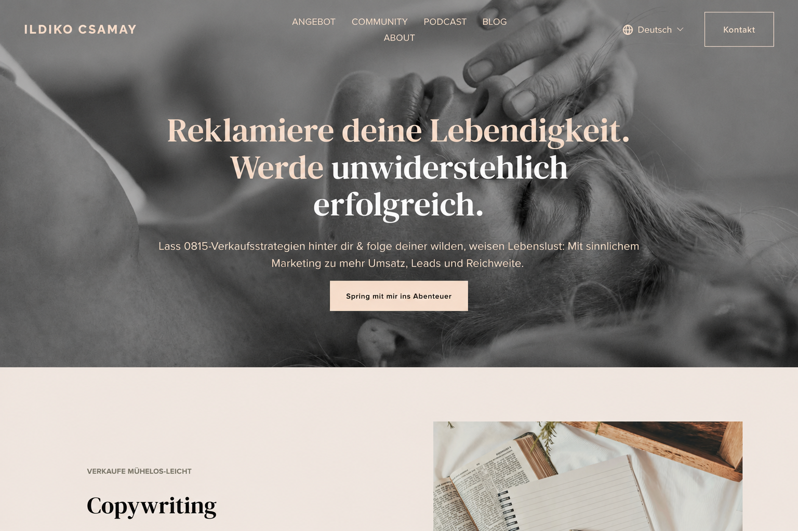

DDr. Kathrin Mika wollte ihren digitalen Auftritt mit demselben Anspruch gestalten wie ihre zahnärztliche Arbeit. Ein neuer Schriftzug, der ein Lächeln aufgreift, professionelle Fotos des gesamten Teams und eine einfache Online-Terminbuchung verbinden Qualität mit Zugänglichkeit. Das Ergebnis: über 50 Website-Besuche pro Tag.
Niemand will eine Website.
Wir alle wollen eigentlich Menschen von unserer Idee überzeugen und Anfragen erhalten.
Das ist bei all den Websites da draußen gar nicht so einfach.
Um wirklich herauszustechen, braucht es heute eine simple, aber geniale Idee, um Aufmerksamkeit zu erlangen.
Und sobald man die Aufmerksamkeit hat, braucht es eine Website, die diese in Kund:innen verwandelt.
Und genau das machen wir.

Für das jährliche Kulturfestival Concerti Corti haben wir ein hochwertiges und zugleich zugängliches Design entwickelt. Es nimmt Bezug auf Axel Corti und funktioniert von Printmedien bis zur Website. Und das bereits im vierten Jahr!

Listening Inward wollte keine Website, sondern „größere Brötchen backen“. Seit Beginn wurden über 100 Workshops verkauft.

Fotozeit wollte keine Website, sondern Paare von ihrem hochwertigen Service überzeugen. Fünf Anfragen in den ersten Wochen.

Vienna Housing Service wollte keine Website, sondern Expats bezugsfertige Wohnungen vermitteln. Mehr als zehn Anfragen pro Monat – mehr, als das Team abarbeiten konnte.

ValentinArt wollte keine Website, sondern einen einfachen Weg, Produkte zu verkaufen. Schon im ersten Monat kamen über 30 Bestellungen zusammen.

Caroline Steffens wollte keine Website, sondern ihr Hobby zum Traumberuf machen. Mit einer Guerrilla Kampagne und einer ansprechenden Website erhält sie nun echte Anfragen.


